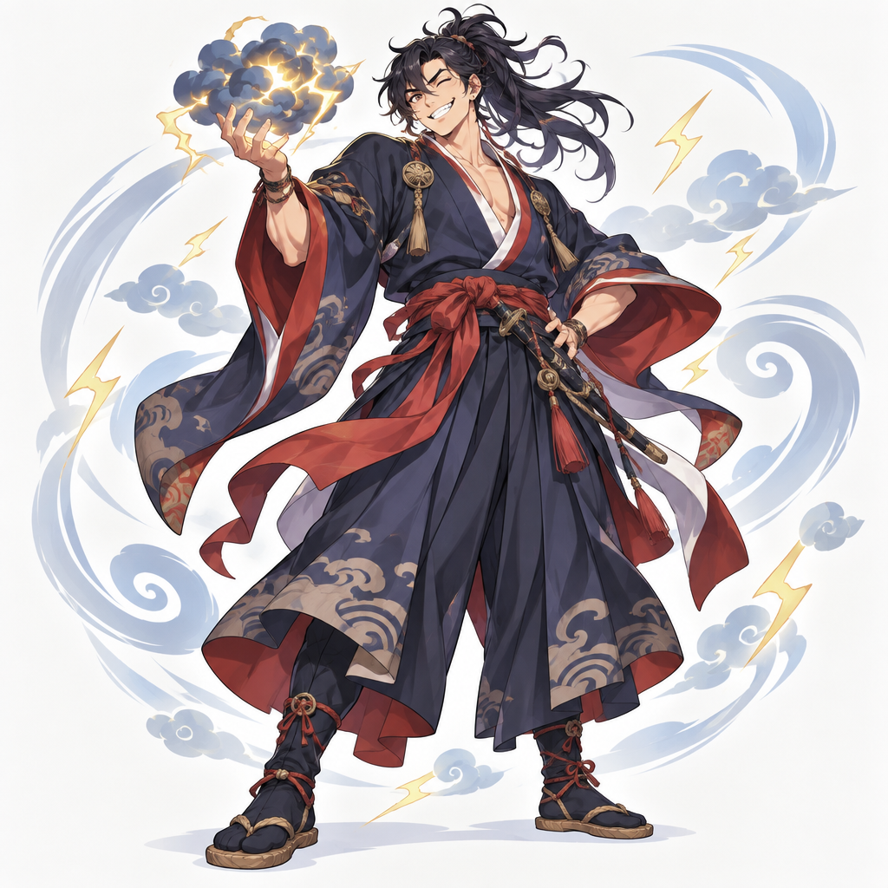

스사노오 신
- 이런 이야기예요
- 스사노오는 소란을 많이 피워서 하늘나라에서 쫓겨난 신이에요. 땅으로 내려온 스사노오는 머리와 꼬리가 여덟 개씩 달린 큰 뱀 '야마타노오로치'에게 딸을 빼앗길까 봐 울고 있는 가족을 만났어요.
- 이렇게 뒤집었어요
- 힘으로 싸우는 대신 문 여덟 개를 만들고 문마다 독한 술을 한 통씩 놓아두었어요. 뱀은 여덟 개의 머리로 술을 모두 마시고 취해 잠들었고, 스사노오는 그 틈에 뱀을 물리쳤어요. 뱀의 꼬리에서는 훌륭한 칼이 나왔지요.
- 생각해 볼까요?
- 말썽꾸러기였던 스사노오가 어떻게 영웅이 될 수 있었을까요?
- 함께 읽을 책
- 일본 신화를 모은 책 『고사기』